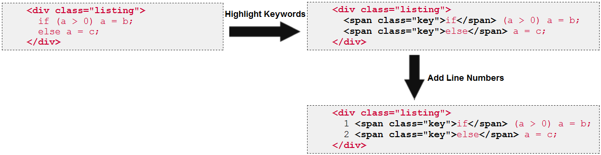

4.6.1. AutoFormat Transformations
Docmenta allows users to create inline- and block-styles that authors can assign to content. On the XHTML source level, these user-defined styles represent CSS classes that are assigned to elements like div, span and others. For example, when an author selects words in the content-editor and assigns an inline-style with ID my_style to the selection, then following XHTML code is generated:
<span class="my_style"> ... selected words ... </span>
Accordingly, when an author selects one or more paragraphs or other block-elements and assigns a block-style with ID my_style, then for example following XHTML code is generated:
<div class="my_style">
<p>
... first selected block ...
</p>
<div class="other_style">
... second selected block ...
</div>
...
</div>
<p>
... first selected block ...
</p>
<div class="other_style">
... second selected block ...
</div>
...
</div>
As you can see in the example above, elements can be nested: the block with style other_style is contained within the block with style my_style.
When you are working with XHTML and CSS, then a style is a set of CSS properties which define the font-size, font-color, background-color and so on. However, you cannot change the overall structure of a block just by changing the CSS properties of a style. For example, you cannot transform a simple paragraph into a table, by using CSS properties. To support such transformations in Docmenta, you can additionally assign one or more Auto-Format classes to a style. Basically an Auto-Format class is a piece of Java code that processes the element to which the style is assigned. Following are two examples of such transformations.
Example 1
In the first example an Auto-Format transformation converts the input-element (highlighted in red) into a table with two rows. The first row is filled with the value of the input-element's title attribute and the second row is filled with the inner content of the input-element. Furthermore any nested p element is replaced by a <br/> element after the block (note that XHTML has to be generated; that is <br/> has to be generated instead of <br>). The following illustration gives an example of the described transformation, assuming that the transformation is assigned to a style with ID my_style1:
Figure 4.6.1. Auto-Format example 1
Example 2
In the second example, an Auto-Format transformation just adds an inline image with alias name mypic to the beginning of the content. Following illustration gives an example, assuming that the transformation is assigned to a style with ID mystyle_2:
Figure 4.6.2. Auto-Format example 2
Note that in the second example, the outer div-block of the input is preserved in the result.
Auto-Format use cases
Maybe somebody is wondering when to use Auto-Format transformations. Consider the situation, that you want to mark special paragraphs as warnings. For example, in the publication these paragraphs shall be highlighted with an exclamation icon. However, you might need differnt designs for different output formats, and if the design of warnings has to be changed in the future, you want to avoid having to update the content at each position where a warning exists. Furthermore, you want to assure that the same warning layout is used throughout the publication. In Docmenta these problems can be partially solved by using style-variants. This allows defining different style properties for the same style ID. Though, using style-variants is sufficient in many cases, you cannot change the overall layout of a block, just by changing the CSS properties of a style. For example, you cannot turn a simple box to become a table. However, such transformations can be done using Auto-Format classes. As an example of how to solve these issues with an Auto-Format class, see the example below, which implements a dynamic template mechanism.
Why not use an XSLT processor?
An Auto-Format transformation can be implemented by using an XSLT processor. Docmenta includes the generic Auto-Format class org.docma.plugin.examples.XSLTAutoFormat that allows to supply an XSLT script for input transformation. Though, for many simple transformations string operations might be sufficient. In general, you can use whatever you consider best, to implement an Auto-Format transformation. The only restriction is that it has to be possible to call it from within Java code.
The export process
Note that Auto-Format transformations are executed on the fly during publication export and during content preview. This means, the stored XHTML source is not modified by these transformations. For example, if an Auto-Format transformation inserts an inline image into the content (see example 2 above), the image only appears in the exported publication or when a preview of the content is rendered. But when the user edits the content, the inline image is not there.
So far we've just had a look to what a single transformation does. Now we'll take a look at the complete export process and see how the transformations interact in specific situations. The left side of the following illustration shows the XHTML source of a publication (only the elements are shown which are important for this example).
")
Figure 4.6.3. Export process (example)
The source content contains four elements, elem1, elem2, elem3 and elem4, from which elem2 and elem3 are contained within elem1. The first element has the style mystyle_1 assigned. The other elements have the style mystyle_2 assigned. For this example, we assume that mystyle_1 and mystyle_2 have an Auto-Format transformation assigned as described in example 1 and 2 above.
During export and preview the source content is parsed top-down. As soon as an element is found which has an Auto-Format style assigned, this element is transformed. Therefore, in our example the first element to be transformed is elem1. The result of this transformation is a table with the element's title in the first row and the element's inner content in the second row. Furthermore the p element is replaced by a <br />. Following illustration depicts the first transformation:
")
Figure 4.6.4. Export process (example, transformation 1)
Now, the result of the first transformation is parsed again, to see if there are further Auto-Format styles to be processed. Actually, there is still the element elem2 in the result, which has the style my_style2 assigned. Therefore the second transformation is to transform elem2, as shown in the following illustration:
Figure 4.6.5. Export process (example, transformation 2)
After this transformation, there are no more Auto-Format styles to be processed, and the parsing continues in the source content after the element elem1, i.e. the third transformation is the processing of element elem4. Note that element elem3 is not transformed, because the p element was removed by the first transformation.
You might wonder why the transformation of elem2 does not lead to an infinite loop, because the result of this transformation still contains the element <span id="elem2" class="my_style2">, which originally caused the transformation. The reason is, that by default, the style which caused a transformation is not processed any more during the parsing of the transformation result. However, the Auto-Format API allows a programmer to disable this behavior by passing true to the setStyleRecursion method of the org.docma.plugin.TransformationContext instance (though, the recursion level is limited by the execution engine to avoid infinte loops).
Piping of transformations
In Docmenta it is possible to assign more than one Auto-Format transformation to a single style. If this is the case, then the output of the first transformation is used as input for the second transformation. If a third Auto-Format transformation is assigned to the style, then the output of the second transformation is used as input for the third transformation, and so on. The following illustration depicts this process:
Figure 4.6.6. Piping of transformations
As an example, consider the situation that you want to include program listings in your publications. The listings shall have line-numbers and the key-words of the programming language shall be highlighted. To solve this requirements without having to format the listings manually, you could create one Auto-Format transformation which adds line-numbers to the content, and a second Auto-Format transformation which highlights the keywords. Both transformations could be implemented completely independent of each other. To achieve the required formatting you could create a style, e.g. with ID listing, which has both transformations assigned. Following illustration depicts the transformation steps of an element which has the style listing assigned:

Figure 4.6.7. Auto-Format piping example
The first transformation highlights keywords by enclosing them with span elements which have the style key assigned. The second piped transformation adds the line numbers. Note that the result of the first Auto-Format transformation is processed by the second piped Auto-Format transformation, even though the result does not contain any more Auto-Format styles to be processed (assuming that the style key has no Auto-Format transformation assigned). If the key style had an Auto-Format style assigned, then the span elements would be processed after the pipeline of transformations has been completely processed (assuming the span elements aren't removed by the piped transformations).
A special case occurs, if the result of a transformation does not contain a single root element. If a transformation produces more than one root element, then the following piped transformation will be applied to all root elements. If, on the other hand, a transformation does not return any XML element at all, e.g. it just returns a character string of type #PCDATA, then the following piped transformations will be skipped. This is because an Auto-Format transformation can only be applied to an XML input-element.